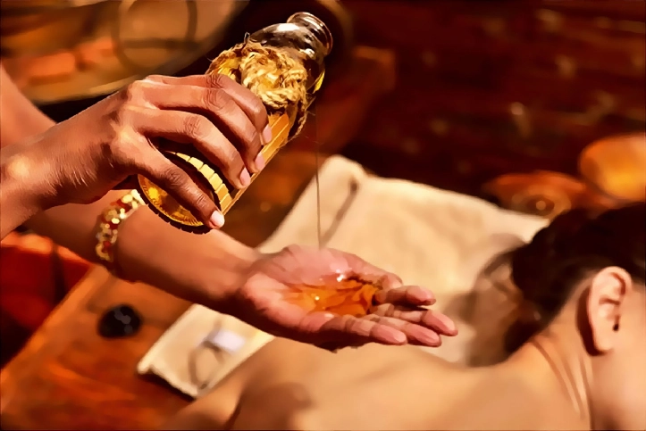

Abhyanga: El Arte Milenario del Masaje Ayurvédico
Abhyanga: El Arte Milenario del Masaje Ayurvédico
El Abhyanga es una práctica ancestral de la medicina ayurvédica que combina el poder terapéutico del masaje con el uso de aceites medicinales tibios, diseño para armonizar cuerpo, mente y espíritu. más que un simple tratamiento corporal, el Abhyanga es un ritual de bienestar profundamente arraigado en la tradición védica, utilizado durante siglos para promover la salud y la longevidad.
Este masaje ayurvédico nutre y revitaliza la piel, estimula la circulación sanguínea y linfática, y favorece la eliminación de toxinas. más, su aplicación regular contribuye a reducir el estrés, mejorar la calidad del sueño y restaurar el equilibrio energético del organismo.
Descubre en este artículo como el Abhyanga puede convertirse en un pilar esencial para el autocuidado y la salud integral.
Índice de Contenidos
1. Introducción al Abhyanga
El Abhyanga se distingue como una terapia integral en el Ayurveda, basada en la aplicación de aceites medicados a temperaturas ideales. Su ejecución mediante movimientos rítmicos facilita la eliminación de toxinas y promueve el equilibrio de los doṣas, potenciando el prāṇa (energía vital).
2. Historia y Origen del Abhyanga
Desde la época védica, textos clásicos como el Charaka Saṃhitā y el Sushruta Saṃhitā han documentado la práctica del masaje con aceite como un método de purificación, fortalecimiento y rejuvenecimiento. Esta tradición se ha mantenido a lo largo de los siglos, siendo un pilar fundamental en la prevención de desequilibrios y el mantenimiento de la salud.
3. Perspectiva Ayurvédica del Masaje
El masaje Abhyanga se fundamenta en el equilibrio de los tres doṣas:
- Vāta: Contrarresta el exceso de sequedad y frío.
- Pitta: Modera el fuego interno.
- Kapha: Estimula la circulación y moviliza la energía estancada.
3.1 Beneficios Terapéuticos
- Mejora de la Circulación: Favorece el flujo sanguíneo y linfático.
- Reducción del Estrés: Contribuye a una profunda relajación y disminución del cortisol.
- Nutrición y Regeneración de la Piel: Facilita la absorción de nutrientes y promueve la regeneración celular.
- Fortalecimiento del Sistema Inmunológico: Ayuda a eliminar toxinas y reequilibrar la energía corporal.
3.2 Impacto Fisiológico y Anatómico
Fisiológicamente, la aplicación del aceite tibio provoca una vasodilatación que mejora la oxigenación y el aporte de nutrientes a los tejidos, facilitando la eliminación de desechos metabólicos a través del sistema linfático. Anatómicamente, el masaje actúa sobre la fascia y los músculos superficiales, aliviando tensiones y mejorando la movilidad articular. La estimulación de receptores cutáneos genera una respuesta neurológica que reduce la percepción del dolor y modula la actividad del sistema nervioso autónomo, promoviendo un estado de relajación integral.
4. Preparación Previa a la Sesión
4.1 Recomendaciones para el Paciente
- Consumir alimentos ligeros y de fácil digestión.
- Realizar actividades suaves, como yoga o caminatas.
- Mantener una adecuada hidratación, preferiblemente con agua tibia.
- Consultar al terapeuta sobre condiciones preexistentes para personalizar el tratamiento.
4.2 Consideraciones Dietéticas y de Estilo de Vida
- Incluir alimentos frescos y de temporada.
- Respetar horarios regulares en las comidas.
- Complementar la terapia con meditación y ejercicios de respiración.
5. Proceso y Técnica del Abhyanga
5.1 Técnicas y Métodos del Masaje
- Selección del Aceite: Basado en la constitución (prakṛti) del paciente.
- Calentamiento del Aceite: A temperatura óptima para una aplicación confortable.
- Movimientos Rítmicos: Aplicación de técnicas circulares siguiendo la dirección de los canales (srotas).
- Personalización: Ajuste de presión y velocidad según las necesidades individuales.
5.2 Aceites Utilizados y sus Propiedades
El aceite de sésamo (til) es el más tradicional, reconocido por sus propiedades antioxidantes y antiinflamatorias. Otros aceites, como el de coco o almendra, se emplean según el clima y el tipo de piel, aportando beneficios específicos en cada caso.
6. Cuidados Posteriores a la Sesión
6.1 Recomendaciones Post-Masaje
- Descansar en un ambiente tranquilo durante 15 a 30 minutos.
- Tomar una ducha tibia para no eliminar el aceite aplicado.
- Mantener una hidratación continua con agua tibia.
- Evitar actividades intensas y estresantes por algunas horas.
6.2 Integración en la Rutina Diaria
- Incorporar el Abhyanga de manera regular (semanal o mensual).
- Complementarlo con otras terapias ayurvédicas, como yoga y meditación.
- Ajustar la frecuencia del tratamiento según las condiciones climáticas y estacionales.
7. Evidencia Científica y Estudios
Estudios recientes han corroborado que el masaje con aceite mejora la circulación, regula el sistema linfático y reduce los niveles de estrés. La evidencia respalda tanto sus efectos fisiológicos como anatómicos, confirmando la validez de la sabiduría ancestral del Ayurveda en la medicina integrativa moderna.
8. Conclusión
El Abhyanga es mucho más que un simple masaje; es una terapia integral que armoniza cuerpo y mente. Su ejecución meticulosa, basada en la aplicación de aceites medicados y movimientos precisos, genera beneficios a nivel fisiológico y anatómico. Al promover la circulación, aliviar tensiones y equilibrar los doṣas, se posiciona como una herramienta poderosa para el mantenimiento de la salud y el bienestar general.
9. Fuentes Bibliográficas
- 1. Singh RB, Niaz MA, & Ghosh S. Hypolipidemic and antioxidant effects of Commiphora mukul as an adjunct to dietary therapy in patients with hypercholesterolemia. Cardiovascular drugs and therapy. 1994; 8: 659-664.
- 2. Francis JA, Raja SN, & Nair MG. Bioactive terpenoids and guggulusteroids from Commiphora mukul gum resin of potential anti‐inflammatory interest. Chemistry & biodiversity. 2004; 1(11): 1842-1853.
- 3. Piscitelli SC, Burstein AH, Welden N, Gallicano KD, Falloon J. The effect of garlic supplements on the pharmacokinetics of saquinavir. Clin Infect Dis. 2002; Jan 15;34(2): 234-238.
- 4. Malhotra CL, Mehta VL, Das PK, and Dhalla NS. Studies on Withania-ashwagandha, Kaul. V. The effect of total alkaloids (ashwagandholine) on the central nervous system. Indian J Physiol Pharmacol. 1965; 9(3): 127-136.